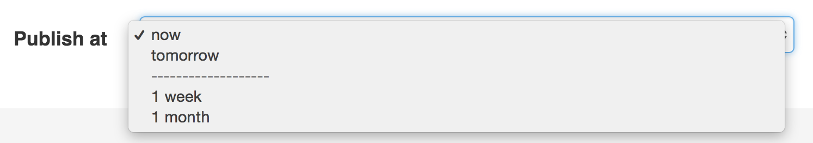

ChoiceType Field (select drop-downs, radio buttons & checkboxes)¶
A multi-purpose field used to allow the user to “choose” one or more options.
It can be rendered as a select tag, radio buttons, or checkboxes.
To use this field, you must specify either choices or choice_loader option.
| Rendered as | can be various tags (see below) |
| Options | |
| Overridden options | |
| Inherited options | |
| Parent type | FormType |
| Class | ChoiceType |
Tip
The full list of options defined and inherited by this form type is available running this command in your app:
1 2 | # replace 'FooType' by the class name of your form type
$ php bin/console debug:form FooType
|
Example Usage¶
The easiest way to use this field is to define the choices option to specify
the choices as an associative array where the keys are the labels displayed to
end users and the array values are the internal values used in the form field:
use Symfony\Component\Form\Extension\Core\Type\ChoiceType;
// ...
$builder->add('isAttending', ChoiceType::class, [
'choices' => [
'Maybe' => null,
'Yes' => true,
'No' => false,
],
]);
This will create a select drop-down like this:
If the user selects No, the form will return false for this field. Similarly,
if the starting data for this field is true, then Yes will be auto-selected.
In other words, the choice of each item is the value you want to get/set in PHP
code, while the key is the label that will be shown to the user.
Advanced Example (with Objects!)¶
This field has a lot of options and most control how the field is displayed. In
this example, the underlying data is some Category object that has a getName()
method:
use App\Entity\Category;
use Symfony\Component\Form\Extension\Core\Type\ChoiceType;
// ...
$builder->add('category', ChoiceType::class, [
'choices' => [
new Category('Cat1'),
new Category('Cat2'),
new Category('Cat3'),
new Category('Cat4'),
],
// "name" is a property path, meaning Symfony will look for a public
// property or a public method like "getName()" to define the input
// string value that will be submitted by the form
'choice_value' => 'name',
// a callback to return the label for a given choice
// if a placeholder is used, its empty value (null) may be passed but
// its label is defined by its own "placeholder" option
'choice_label' => function(?Category $category) {
return $category ? strtoupper($category->getName()) : '';
},
// returns the html attributes for each option input (may be radio/checkbox)
'choice_attr' => function(?Category $category) {
return $category ? ['class' => 'category_'.strtolower($category->getName())] : [];
},
// every option can use a string property path or any callable that get
// passed each choice as argument, but it may not be needed
'group_by' => function() {
// randomly assign things into 2 groups
return rand(0, 1) == 1 ? 'Group A' : 'Group B';
},
// a callback to return whether a category is preferred
'preferred_choices' => function(?Category $category) {
return $category && 100 < $category->getArticleCounts();
},
]);
You can also customize the choice_name of each choice. You can learn more about all of these options in the sections below.
Caution
The placeholder is a specific field, when the choices are optional the
first item in the list must be empty, so the user can unselect.
Be sure to always handle the empty choice null when using callbacks.
Select Tag, Checkboxes or Radio Buttons¶
This field may be rendered as one of several HTML fields, depending
on the expanded and multiple options:
| Element Type | Expanded | Multiple |
|---|---|---|
| select tag | false |
false |
select tag (with multiple attribute) |
false |
true |
| radio buttons | true |
false |
| checkboxes | true |
true |
Customizing each Option’s Text (Label)¶
Normally, the array key of each item in the choices option is used as the
text that’s shown to the user. But that can be completely customized via the
choice_label option. Check it out for more details.
Grouping Options¶
You can group the <option> elements of a <select> into <optgroup>
by passing a multi-dimensional choices array:
use Symfony\Component\Form\Extension\Core\Type\ChoiceType;
// ...
$builder->add('stockStatus', ChoiceType::class, [
'choices' => [
'Main Statuses' => [
'Yes' => 'stock_yes',
'No' => 'stock_no',
],
'Out of Stock Statuses' => [
'Backordered' => 'stock_backordered',
'Discontinued' => 'stock_discontinued',
],
],
]);
To get fancier, use the group_by option instead.
Field Options¶
choices¶
type: array default: []
This is the most basic way to specify the choices that should be used
by this field. The choices option is an array, where the array key
is the item’s label and the array value is the item’s value:
use Symfony\Component\Form\Extension\Core\Type\ChoiceType;
// ...
$builder->add('inStock', ChoiceType::class, [
'choices' => [
'In Stock' => true,
'Out of Stock' => false,
],
]);
If there are choice values that are not scalar or the stringified representation is not unique Symfony will use incrementing integers as values. When the form gets submitted the correct values with the correct types will be assigned to the model.
choice_attr¶
type: array, callable, string or PropertyPath default: []
Use this to add additional HTML attributes to each choice. This can be an associative array where the keys match the choice keys and the values are the attributes for each choice, a callable or a property path (just like choice_label).
If an array, the keys of the choices array must be used as keys:
use Symfony\Component\Form\Extension\Core\Type\ChoiceType;
// ...
$builder->add('fruits', ChoiceType::class, [
'choices' => [
'Apple' => 1,
'Banana' => 2,
'Durian' => 3,
],
'choice_attr' => [
'Apple' => ['data-color' => 'Red'],
'Banana' => ['data-color' => 'Yellow'],
'Durian' => ['data-color' => 'Green'],
],
]);
// or use a callable
$builder->add('attending', ChoiceType::class, [
'choices' => [
'Yes' => true,
'No' => false,
'Maybe' => null,
],
'choice_attr' => function($choice, $key, $value) {
// adds a class like attending_yes, attending_no, etc
return ['class' => 'attending_'.strtolower($key)];
},
]);
choice_label¶
type: string, callable, false or PropertyPath default: null
By default, the array key of each item in the choices option is used as the
text that’s shown to the user. The choice_label option allows you to take
more control:
use Symfony\Component\Form\Extension\Core\Type\ChoiceType;
// ...
$builder->add('attending', ChoiceType::class, [
'choices' => [
'yes' => true,
'no' => false,
'maybe' => null,
],
'choice_label' => function ($choice, $key, $value) {
if (true === $choice) {
return 'Definitely!';
}
return strtoupper($key);
// or if you want to translate some key
//return 'form.choice.'.$key;
},
]);
This method is called for each choice, passing you the $choice and
$key from the choices array (additional $value is related to choice_value).
This will give you:
If your choice values are objects, then choice_label can also be a
property path. Imagine you have some
Status class with a getDisplayName() method:
use Symfony\Component\Form\Extension\Core\Type\ChoiceType;
// ...
$builder->add('attending', ChoiceType::class, [
'choices' => [
new Status(Status::YES),
new Status(Status::NO),
new Status(Status::MAYBE),
],
'choice_label' => 'displayName',
]);
If set to false, all the tag labels will be discarded for radio or checkbox
inputs. You can also return false from the callable to discard certain labels.
choice_loader¶
type: ChoiceLoaderInterface
The choice_loader can be used to only partially load the choices in cases where
a fully-loaded list is not necessary. This is only needed in advanced cases and
would replace the choices option.
You can use an instance of CallbackChoiceLoader
if you want to take advantage of lazy loading:
use Symfony\Component\Form\ChoiceList\Loader\CallbackChoiceLoader;
use Symfony\Component\Form\Extension\Core\Type\ChoiceType;
// ...
$builder->add('constants', ChoiceType::class, [
'choice_loader' => new CallbackChoiceLoader(function() {
return StaticClass::getConstants();
}),
]);
This will cause the call of StaticClass::getConstants() to not happen if the
request is redirected and if there is no pre set or submitted data. Otherwise
the choice options would need to be resolved thus triggering the callback.
choice_name¶
type: callable, string or PropertyPath default: null
Controls the internal field name of the choice. You normally don’t care about this, but in some advanced cases, you might. For example, this “name” becomes the index of the choice views in the template and is used as part of the field name attribute.
This can be a callable or a property path. See choice_label for similar usage.
By default, the choice key or an incrementing integer may be used (starting at 0).
Caution
The configured value must be a valid form name. Make sure to only return valid names when using a callable. Valid form names must be composed of letters, digits, underscores, dashes and colons and must not start with a dash or a colon.
choice_translation_domain¶
type: string, boolean or null default: true
This option determines if the choice values should be translated and in which translation domain.
The values of the choice_translation_domain option can be true (reuse the current
translation domain), false (disable translation), null (uses the parent translation
domain or the default domain) or a string which represents the exact translation
domain to use.
choice_value¶
type: callable, string or PropertyPath default: null
Returns the string “value” for each choice, which must be unique across all choices.
This is used in the value attribute in HTML and submitted in the POST/PUT requests.
You don’t normally need to worry about this, but it might be handy when processing
an API request (since you can configure the value that will be sent in the API request).
This can be a callable or a property path. By default, the choices are used if they
can be casted to strings. Otherwise an incrementing integer is used (starting at 0).
If you pass a callable, it will receive one argument: the choice itself. When using
the EntityType Field, the argument will be the entity object
for each choice or null in a placeholder is used, which you need to handle:
'choice_value' => function (?MyOptionEntity $entity) {
return $entity ? $entity->getId() : '';
},
expanded¶
type: boolean default: false
If set to true, radio buttons or checkboxes will be rendered (depending
on the multiple value). If false, a select element will be rendered.
group_by¶
type: string, callable or PropertyPath default: null
You can group the <option> elements of a <select> into <optgroup>
by passing a multi-dimensional array to choices. See the
Grouping Options section about that.
The group_by option is an alternative way to group choices, which gives you
a bit more flexibility.
Take the following example:
use Symfony\Component\Form\Extension\Core\Type\ChoiceType;
// ...
$builder->add('publishAt', ChoiceType::class, [
'choices' => [
'now' => new \DateTime('now'),
'tomorrow' => new \DateTime('+1 day'),
'1 week' => new \DateTime('+1 week'),
'1 month' => new \DateTime('+1 month'),
],
'group_by' => function($choice, $key, $value) {
if ($choice <= new \DateTime('+3 days')) {
return 'Soon';
}
return 'Later';
},
]);
This groups the dates that are within 3 days into “Soon” and everything else into
a “Later” <optgroup>:
If you return null, the option won’t be grouped. You can also pass a string
“property path” that will be called to get the group. See the choice_label for
details about using a property path.
multiple¶
type: boolean default: false
If true, the user will be able to select multiple options (as opposed
to choosing just one option). Depending on the value of the expanded
option, this will render either a select tag or checkboxes if true and
a select tag or radio buttons if false. The returned value will be an array.
placeholder¶
type: string or boolean
This option determines whether or not a special “empty” option (e.g. “Choose
an option”) will appear at the top of a select widget. This option only
applies if the multiple option is set to false.
Add an empty value with “Choose an option” as the text:
use Symfony\Component\Form\Extension\Core\Type\ChoiceType; // ... $builder->add('states', ChoiceType::class, [ 'placeholder' => 'Choose an option', ]);
Guarantee that no “empty” value option is displayed:
use Symfony\Component\Form\Extension\Core\Type\ChoiceType; // ... $builder->add('states', ChoiceType::class, [ 'placeholder' => false, ]);
If you leave the placeholder option unset, then a blank (with no text)
option will automatically be added if and only if the required option
is false:
use Symfony\Component\Form\Extension\Core\Type\ChoiceType;
// ...
// a blank (with no text) option will be added
$builder->add('states', ChoiceType::class, [
'required' => false,
]);
preferred_choices¶
type: array, callable, string or PropertyPath default: []
This option allows you to display certain choices at the top of your list with a visual separator between them and the complete list of options. If you have a form of languages, you can list the most popular on top, like Bork and Pirate:
use Symfony\Component\Form\Extension\Core\Type\ChoiceType;
// ...
$builder->add('language', ChoiceType::class, [
'choices' => [
'English' => 'en',
'Spanish' => 'es',
'Bork' => 'muppets',
'Pirate' => 'arr',
],
'preferred_choices' => ['muppets', 'arr'],
]);
New in version 4.4: Starting from Symfony 4.4, the preferred choices are displayed both at the top of the list and at their original locations on the list. In prior Symfony versions, they were only displayed at the top of the list.
This options can also be a callback function to give you more flexibility. This might be especially useful if your values are objects:
use Symfony\Component\Form\Extension\Core\Type\ChoiceType;
// ...
$builder->add('publishAt', ChoiceType::class, [
'choices' => [
'now' => new \DateTime('now'),
'tomorrow' => new \DateTime('+1 day'),
'1 week' => new \DateTime('+1 week'),
'1 month' => new \DateTime('+1 month'),
],
'preferred_choices' => function ($choice, $key, $value) {
// prefer options within 3 days
return $choice <= new \DateTime('+3 days');
},
]);
This will “prefer” the “now” and “tomorrow” choices only:
Finally, if your values are objects, you can also specify a property path string on the object that will return true or false.
The preferred choices are only meaningful when rendering a select element
(i.e. expanded false). The preferred choices and normal choices are separated
visually by a set of dotted lines (i.e. -------------------). This can be customized
when rendering the field:
- Twig
1
{{ form_widget(form.publishAt, { 'separator': '=====' }) }}
- PHP
1 2 3
<?= $view['form']->widget($form['publishAt'], [ 'separator' => '=====', ]) ?>
Overridden Options¶
compound¶
type: boolean default: same value as expanded option
This option specifies if a form is compound. The value is by default
overridden by the value of the expanded option.
empty_data¶
type: mixed
The actual default value of this option depends on other field options:
- If
multipleisfalseandexpandedisfalse, then''(empty string); - Otherwise
[](empty array).
This option determines what value the field will return when the submitted value is empty (or missing). It does not set an initial value if none is provided when the form is rendered in a view.
This means it helps you handling form submission with blank fields. For
example, if you want the name field to be explicitly set to John Doe
when no value is selected, you can do it like this:
$builder->add('name', null, [
'required' => false,
'empty_data' => 'John Doe',
]);
This will still render an empty text box, but upon submission the John Doe
value will be set. Use the data or placeholder options to show this
initial value in the rendered form.
If a form is compound, you can set empty_data as an array, object or
closure. See the How to Configure empty Data for a Form Class article for more details about
these options.
Note
If you want to set the empty_data option for your entire form class,
see the How to Configure empty Data for a Form Class article.
Caution
Form data transformers will still be
applied to the empty_data value. This means that an empty string will
be cast to null. Use a custom data transformer if you explicitly want
to return the empty string.
error_bubbling¶
type: boolean default: false
Set that error on this field must be attached to the field instead of the parent field (the form in most cases).
trim¶
type: boolean default: false
Trimming is disabled by default because the selected value or values must match the given choice values exactly (and they could contain whitespaces).
Inherited Options¶
These options inherit from the FormType:
attr¶
type: array default: []
If you want to add extra attributes to an HTML field representation
you can use the attr option. It’s an associative array with HTML attributes
as keys. This can be useful when you need to set a custom class for some widget:
$builder->add('body', TextareaType::class, [
'attr' => ['class' => 'tinymce'],
]);
See also
Use the row_attr option if you want to add these attributes to the
the form type row element.
by_reference¶
type: boolean default: true
In most cases, if you have an author field, then you expect setAuthor()
to be called on the underlying object. In some cases, however, setAuthor()
may not be called. Setting by_reference to false ensures that the setter is
called in all cases.
To explain this further, here’s a simple example:
use Symfony\Component\Form\Extension\Core\Type\EmailType;
use Symfony\Component\Form\Extension\Core\Type\FormType;
use Symfony\Component\Form\Extension\Core\Type\TextType;
// ...
$builder = $this->createFormBuilder($article);
$builder
->add('title', TextType::class)
->add(
$builder->create('author', FormType::class, ['by_reference' => ?])
->add('name', TextType::class)
->add('email', EmailType::class)
)
If by_reference is true, the following takes place behind the scenes
when you call submit() (or handleRequest()) on the form:
$article->setTitle('...');
$article->getAuthor()->setName('...');
$article->getAuthor()->setEmail('...');
Notice that setAuthor() is not called. The author is modified by reference.
If you set by_reference to false, submitting looks like this:
$article->setTitle('...');
$author = clone $article->getAuthor();
$author->setName('...');
$author->setEmail('...');
$article->setAuthor($author);
So, all that by_reference=false really does is that it clones the object,
which enforces the framework to call the setter on the parent object.
Similarly, if you’re using the CollectionType
field where your underlying collection data is an object (like with
Doctrine’s ArrayCollection), then by_reference must be set to false
if you need the adder and remover (e.g. addAuthor() and removeAuthor())
to be called.
data¶
type: mixed default: Defaults to field of the underlying structure.
When you create a form, each field initially displays the value of the corresponding property of the form’s domain data (e.g. if you bind an object to the form). If you want to override this initial value for the form or an individual field, you can set it in the data option:
use Symfony\Component\Form\Extension\Core\Type\HiddenType;
// ...
$builder->add('token', HiddenType::class, [
'data' => 'abcdef',
]);
Caution
The data option always overrides the value taken from the domain data
(object) when rendering. This means the object value is also overridden when
the form edits an already persisted object, causing it to lose its
persisted value when the form is submitted.
disabled¶
type: boolean default: false
If you don’t want a user to modify the value of a field, you can set the disabled option to true. Any submitted value will be ignored.
error_mapping¶
type: array default: []
This option allows you to modify the target of a validation error.
Imagine you have a custom method named matchingCityAndZipCode() that validates
whether the city and zip code match. Unfortunately, there is no matchingCityAndZipCode
field in your form, so all that Symfony can do is display the error on top
of the form.
With customized error mapping, you can do better: map the error to the city field so that it displays above it:
public function configureOptions(OptionsResolver $resolver)
{
$resolver->setDefaults([
'error_mapping' => [
'matchingCityAndZipCode' => 'city',
],
]);
}
Here are the rules for the left and the right side of the mapping:
- The left side contains property paths;
- If the violation is generated on a property or method of a class, its
path is the
propertyName; - If the violation is generated on an entry of an
arrayorArrayAccessobject, the property path is[indexName]; - You can construct nested property paths by concatenating them, separating
properties by dots. For example:
addresses[work].matchingCityAndZipCode; - The right side contains the names of fields in the form.
By default, errors for any property that is not mapped will bubble up to the
parent form. You can use the dot (.) on the left side to map errors of all
unmapped properties to a particular field. For instance, to map all these
errors to the city field, use:
$resolver->setDefaults([
'error_mapping' => [
'.' => 'city',
],
]);
help¶
type: string default: null
Allows you to define a help message for the form field, which by default is rendered below the field:
$builder->add('zipCode', null, [
'help' => 'The ZIP/Postal code for your credit card\'s billing address.',
]);
help_attr¶
type: array default: []
Sets the HTML attributes for the element used to display the help message of the form field. Its value is an associative array with HTML attribute names as keys. These attributes can also be set in the template:
1 2 3 | {{ form_help(form.name, 'Your name', {
'help_attr': {'class': 'CUSTOM_LABEL_CLASS'}
}) }}
|
help_html¶
type: boolean default: false
By default, the contents of the help option are escaped before rendering
them in the template. Set this option to true to not escape them, which is
useful when the help contains HTML elements.
inherit_data¶
type: boolean default: false
This option determines if the form will inherit data from its parent form. This can be useful if you have a set of fields that are duplicated across multiple forms. See How to Reduce Code Duplication with “inherit_data”.
Caution
When a field has the inherit_data option set, it uses the data of
the parent form as is. This means that
Data Transformers won’t be
applied to that field.
label¶
type: string default: The label is “guessed” from the field name
Sets the label that will be used when rendering the field. Setting to false will suppress the label. The label can also be directly set inside the template:
- Twig
1
{{ form_label(form.name, 'Your name') }}
- PHP
1 2 3 4
echo $view['form']->label( $form['name'], 'Your name' );
label_attr¶
type: array default: []
Sets the HTML attributes for the <label> element, which will be used
when rendering the label for the field. It’s an associative array with HTML
attribute as a key. This attributes can also be directly set inside the
template:
- Twig
1 2 3
{{ form_label(form.name, 'Your name', { 'label_attr': {'class': 'CUSTOM_LABEL_CLASS'} }) }}
- PHP
1 2 3 4 5
echo $view['form']->label( $form['name'], 'Your name', ['label_attr' => ['class' => 'CUSTOM_LABEL_CLASS']] );
label_format¶
type: string default: null
Configures the string used as the label of the field, in case the label
option was not set. This is useful when using
keyword translation messages.
If you’re using keyword translation messages as labels, you often end up having
multiple keyword messages for the same label (e.g. profile_address_street,
invoice_address_street). This is because the label is built for each “path”
to a field. To avoid duplicated keyword messages, you can configure the label
format to a static value, like:
// ...
$profileFormBuilder->add('address', AddressType::class, [
'label_format' => 'form.address.%name%',
]);
$invoiceFormBuilder->add('invoice', AddressType::class, [
'label_format' => 'form.address.%name%',
]);
This option is inherited by the child types. With the code above, the label of
the street field of both forms will use the form.address.street keyword
message.
Two variables are available in the label format:
%id%- A unique identifier for the field, consisting of the complete path to the
field and the field name (e.g.
profile_address_street); %name%- The field name (e.g.
street).
The default value (null) results in a
“humanized” version of the field name.
Note
The label_format option is evaluated in the form theme. Make sure to
update your templates in case you
customized form theming.
mapped¶
type: boolean default: true
If you wish the field to be ignored when reading or writing to the object,
you can set the mapped option to false.
required¶
type: boolean default: true
If true, an HTML5 required attribute will be rendered. The corresponding
label will also render with a required class.
This is superficial and independent of validation. At best, if you let Symfony guess your field type, then the value of this option will be guessed from your validation information.
Note
The required option also affects how empty data for each field is handled. For more details, see the empty_data option.
row_attr¶
type: array default: []
An associative array of the HTML attributes added to the element which is used to render the form type row:
$builder->add('body', TextareaType::class, [
'row_attr' => ['class' => 'text-editor', 'id' => '...'],
]);
See also
Use the attr option if you want to add these attributes to the
the form type widget element.
New in version 4.3: The row_attr option was introduced in Symfony 4.3.
translation_domain¶
type: string default: messages
In case choice_translation_domain is set to true or null, this
configures the exact translation domain that will be used for any labels or
options that are rendered for this field.
label_translation_parameters¶
type: array default: []
New in version 4.3: The label_translation_parameters option was introduced in Symfony 4.3.
The content of the label option is translated before displaying it, so it can contain translation placeholders. This option defines the values used to replace those placeholders.
Given this translation message:
1 2 | # translations/messages.en.yaml
form.order.id: 'Identifier of the order to %company%'
|
You can specify the placeholder values as follows:
$builder->add('id', null, [
'label' => 'form.order.id',
'label_translation_parameters' => [
'%company%' => 'ACME Inc.',
],
]);
The label_translation_parameters option of children fields is merged with
the same option of their parents, so children can reuse and/or override any of
the parent placeholders.
attr_translation_parameters¶
type: array default: []
New in version 4.3: The attr_translation_parameters option was introduced in Symfony 4.3.
The content of the title and placeholder values defined in the attr
option is translated before displaying it, so it can contain
translation placeholders. This
option defines the values used to replace those placeholders.
Given this translation message:
1 2 3 | # translations/messages.en.yaml
form.order.id.placeholder: 'Enter unique identifier of the order to %company%'
form.order.id.title: 'This will be the reference in communications with %company%'
|
You can specify the placeholder values as follows:
$builder->add('id', null, [
'attr' => [
'placeholder' => 'form.order.id.placeholder',
'title' => 'form.order.id.title',
],
'attr_translation_parameters' => [
'%company%' => 'ACME Inc.',
],
]);
The attr_translation_parameters option of children fields is merged with the
same option of their parents, so children can reuse and/or override any of the
parent placeholders.
help_translation_parameters¶
type: array default: []
New in version 4.3: The help_translation_parameters option was introduced in Symfony 4.3.
The content of the help option is translated before displaying it, so it can contain translation placeholders. This option defines the values used to replace those placeholders.
Given this translation message:
1 2 | # translations/messages.en.yaml
form.order.id.help: 'This will be the reference in communications with %company%'
|
You can specify the placeholder values as follows:
$builder->add('id', null, [
'help' => 'form.order.id.help',
'help_translation_parameters' => [
'%company%' => 'ACME Inc.',
],
]);
The help_translation_parameters option of children fields is merged with the
same option of their parents, so children can reuse and/or override any of the
parent placeholders.
Field Variables¶
| Variable | Type | Usage |
|---|---|---|
| multiple | boolean |
The value of the multiple option. |
| expanded | boolean |
The value of the expanded option. |
| preferred_choices | array |
A nested array containing the ChoiceView objects of
choices which should be presented to the user with priority. |
| choices | array |
A nested array containing the ChoiceView objects of
the remaining choices. |
| separator | string |
The separator to use between choice groups. |
| placeholder | mixed |
The empty value if not already in the list, otherwise
null. |
| choice_translation_domain | mixed |
boolean, null or string to determine if the value
should be translated. |
| is_selected | callable |
A callable which takes a ChoiceView and the selected value(s)
and returns whether the choice is in the selected value(s). |
| placeholder_in_choices | boolean |
Whether the empty value is in the choice list. |
Tip
It’s significantly faster to use the selectedchoice(selected_value) test instead when using Twig.